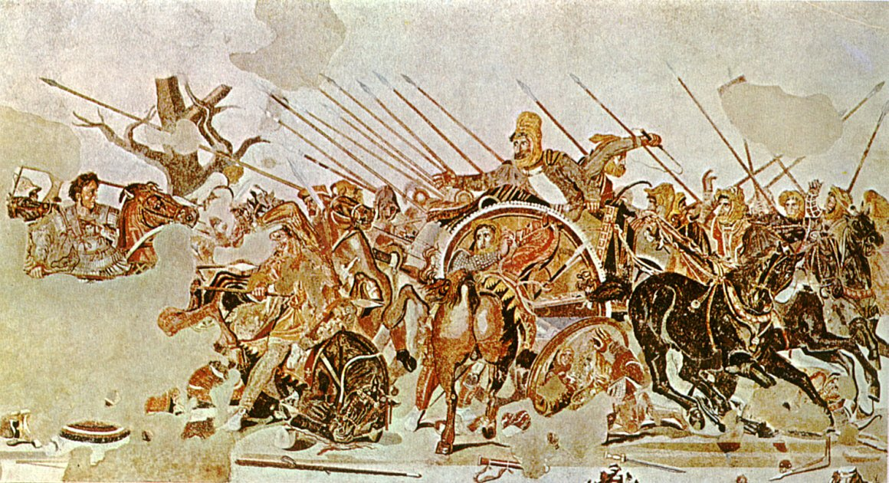
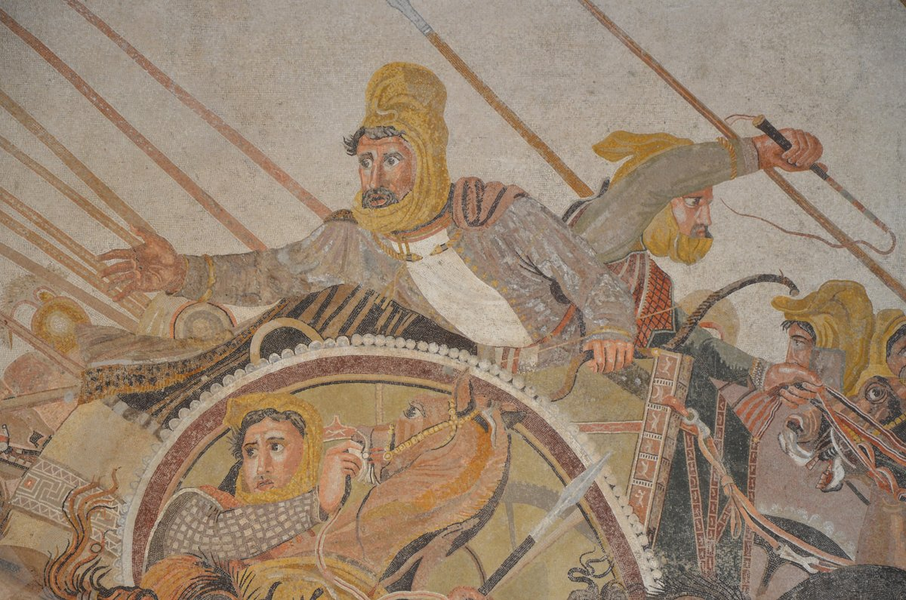

Alexander Mosaic
Artist unknown · Roman copy, circa 100 B.C.E. · House of the Faun, Pompeii
Look closely at a battle in stone

Detail · Darius in his chariot

At the center of the battle, Darius reaches toward a fallen comrade while his driver turns the horses to flee. Up close, you can see the tiny stone pieces that make the picture.
A mosaic is a picture made from thousands of tiny pieces of stone or glass. The Alexander Mosaic uses about 1.5 million pieces. From far away, your eyes blend them together so the floor seems like a painted battle scene.
The scene shows Alexander charging from the left on horseback. Darius, on the right, looks back from his chariot in fear. The mosaic was probably copied from a famous Greek painting that is now lost, so it gives us a rare look at what ancient Greek painting may have been like.
Mosaic (moh-ZAY-ik)
A picture or pattern made by setting small pieces of colored stone, glass, ceramic, or marble into wet mortar.
Tessera (TESS-er-uh)
One small cube of stone, glass, or ceramic used to make a mosaic. The plural is tesserae.
House of the Faun
One of the largest private houses in Pompeii. The Alexander Mosaic once covered the floor of one of its rooms.
- Step back in your mind, then zoom in. When does the mosaic look like a painting, and when can you see the separate pieces?
- Follow the diagonal line of spears. How does it push your eyes toward Darius and his chariot?
- Look at Darius’s face and outstretched hand. What do they tell you about the battle without using words?
- Notice the missing grey areas. Even with damage, the artist’s main story is still clear.
Why this matters later
The gold-ground mosaics you will meet in the Early Medieval deck—at the Mausoleum of Galla Placidia, in the apse of San Vitale, and in the dome of Hagia Sophia—use the same basic idea: tiny pieces set into mortar. Their subjects change from ancient battles to Christ and saints, but mosaics still make walls glow with color and light.